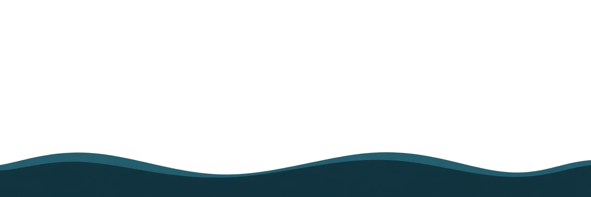

OUR ACTIVITIES
活動について
立ち止まれるきっかけを。

MISSION / VISION
眠りに希望を、心に余白を。
止まることが許される社会をつくる。
WHY WE ARE HERE
頑張り続ける毎日に、
立ち止まれる港を。
眠れない夜。気持ちに余裕がない日。自分のことを後回しにしてしまうとき。Sleeportは、睡眠とこころについて知り、自分をいたわるきっかけを届けるプロジェクトです。
港と灯台、ポルト・スリーモ・ドルタルの物語を入口に、睡眠障害やメンタルヘルスについて学べる場所を育てていきます。「休んでいい」と思えること、ひとりで抱えず相談できることを大切にしています。
Sleeportの世界観を読むこの港で届けること
01
02
眠りとこころを、少しずつ知る
睡眠や心の不調について、動画を通して学べます。気になるテーマから、自分のペースで。情報の根拠と当てはまる範囲を確かめながら、日々を見つめる手がかりを届けます。
灯台のまなびを見る03
これから育てていきたい活動
眠りとこころを一緒に学ぶセミナーや、企業・団体と取り組む教育・啓発企画を検討しています。開催や参加方法が決まった企画は、このサイトでご案内します。
活動の便りを見る一緒に、立ち止まれるきっかけを。
職場や地域での睡眠・メンタルヘルス教育、共同企画、キャラクターと世界観を活かした発信など。活動の目的や届けたい相手から、ご相談ください。
法人・協業のご相談安心して知り、学ぶために
物語はフィクションです。学習コンテンツとは区別して届けます。Sleeportの情報発信は一般向けの教育を目的とし、個別の診断・治療・緊急対応は行いません。
眠れない日や心のつらさが続く、生活に支障があるときには、医療機関や専門家への相談も大切な選択肢です。
編集方針を読む活動へのご連絡
活動へのご質問、掲載内容の訂正、取材などのご連絡は、運営・お問い合わせからお寄せください。
運営・お問い合わせ